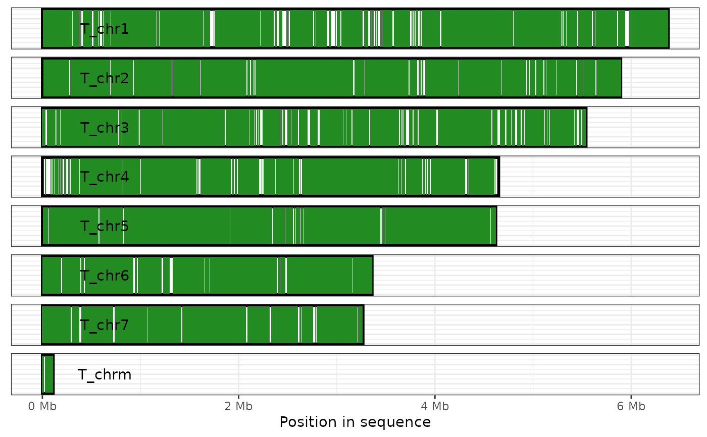

R/coverage_plot.r
plot_coverage.RdEach sequence in the focal genome is displayed as a rectangle, with regions
covered by an alignment shaded as per the fill argument described
below. Uncovered regions remain white.
plot_coverage( ali, target = TRUE, fill = "forestgreen", direct_label = TRUE, label_colour = "black", xlab = "Position in sequence", x_labeller = Mb_lab )
| ali | alignment An alignment as read by |
|---|---|
| target | logical If TRUE, display coverage for the target genome; if FALSE, display coverage for the query |
| fill | character How to colour the alignment blocks. If the character
provided is the name of a column in the alignment, this column will be passed
to |
| direct_label | logical If TRUE, use geom_text to directly label the name of the focal sequences; if FALSE, no direct labels are drawn |
| label_colour | character Colour used for direct labels |
| xlab | string Name for the x-axis |
| x_labeller | function Function to be used to label the x-axis (defaults to
|
Note that this function uses theme_coverage_plot to style the
graph. Using another ggplot theme on the plot may produce unexpected results.
plot_coverage(ali, fill='qname', direct_label=FALSE) + scale_fill_brewer(palette="Set1")